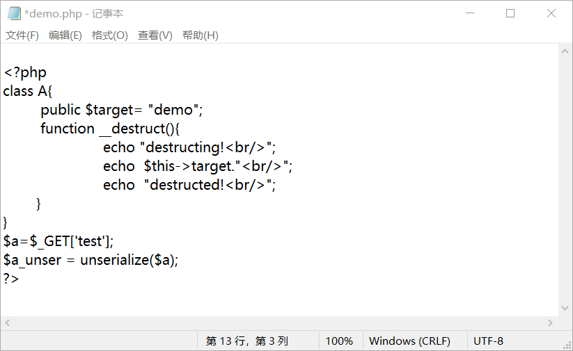

反序列化漏洞学习笔记+靶场实战
[TOC]
反序列化漏洞相关知识点：
（引自 i春秋网络安全学院文章）
什么是反序列化：
摘自维基百科：序列化（serialization）在计算机科学的数据处理中，是指将数据结构或对象状态转换成可取用格式（例如存成文件，存于缓冲，或经由网络中发送），以留待后续在相同或另一台计算机环境中，能恢复原先状态的过程。
概念很容易理解，其实就是将数据转化成一种可逆的数据结构，自然，逆向的过程就叫做反序列化。
序列化根据编程语言的不同分为：php反序列化，Java反序列化，python反序列化。
在php应用中，序列化和反序列化一般用做缓存，比如seesion缓存,cookie等。
常见的序列化格式：
二进制
字节数组
json字符串
xml字符串
序列化的字符串参数理解：
PHP序列化与反序列化
实现函数:string serialize()和 mixed unserialize()
我们这里创建了一个对象，并通过serialize序列化后进行了打印；
魔术函数（Magic fucntion)
PHP类中有一种特殊函数体的存在叫魔法函数，magic函数命名是以符号__开头的。
导致php出现反序列化漏洞的主要原因就是我们所调用的魔术函数：
__wakeup:unserialize()会检查是否存在一个 _wakeup()方法。如果存在，则会先调用 _wakeup方法，预先准备对象需要的资源。
__constuct:具有构造函数的类会在每次创建对象时先调用此方法。
__destruct:析构函数会在到某个对象的所有引用都被删除或者当对象被显式销毁时执行。
__toString:该方法用于一个类被当成字符串时应怎样回应。
利用代码测试魔术环境：
运行发现php文件发现
_wakeup()会在unserialize()自动调用， _destruct会在对象销毁时自动调用
php反序列化漏洞
漏洞成因：
PHP反序列化漏洞又称PHP对象注入，可能导致远程代码执行(RCE)，主要原因是程序的输入不当导致。
漏洞产生的必要条件：
1.unserialize函数的变量可控。
2.php文件中存在可利用的类，类中有魔术方法。
示例1
我们在本地网站新建demo.php
我们可以尝试构造一个对象，控制$test的值，达到控制数据流的目的，实现反序列化漏洞的利用

在url中填入序列化好的攻击代码，即可利用成功
示例2：
我们在本地搭建环境后，新建class.php
我们通过控制序列化字符串在本地新建一个shell.php进而打开phpinfo界面；在调用unserialize()时会通过__wakeup()把$test的写入到shell.php中。
效果如下：

示例3：（多次调用魔术函数）
我们给test传入构造好的序列化字符串后，进行反序列化时自动调用wakeup()函数，从而在new joker()会自动调用对象joker中的construct()方法，从而把写入到shell.php中：
三.靶场相关题目
攻防世界（unserialize3)
题目来源:攻防世界 web进阶区
代码审计可知我们需要绕过__wakeup()函数。
我们首先根据题目源码构造序列化代码。

这里利用到了一个 __wakeup()函数的漏洞（CVE-2016-7124）。
一个字符串或对象被序列化后，如果其属性被修改，则不会执行__wakeup()函数，可以用来绕过；
得到的序列化字符串为：O:4:”xctf”:1:{s:4:”flag”;s:3:”111”;}
括号前的数字即为属性值,所以将其修改后传入url中即可获得flag。

Bugku CTF (php伪协议&反序列化)
首先我们根据源码提示，利用php伪协议得到反序列化相关代码。
这里看到了__string魔术方法：作用为将flag类作为字符串执行时会自动执行此函数。
在index.php又发现了关键函数unserialize();正则匹配函数preg_match对flag进行了匹配。
由于过滤不能通过文件包含的方式读取flag。但是我们可以自由的传入password的值。
所以我们就可以构造序列化对象：变量file=flag.php，传给password

构造payload:
?txt=php://input&file=hint.php&passwordO:4:"Flag":1:{s:4:"file";s:8:"flag.php";}即可得到flag.